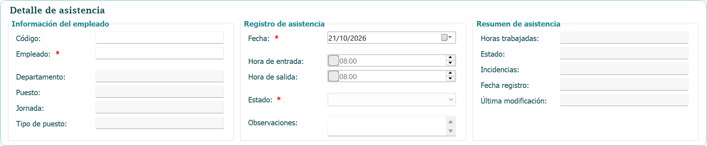
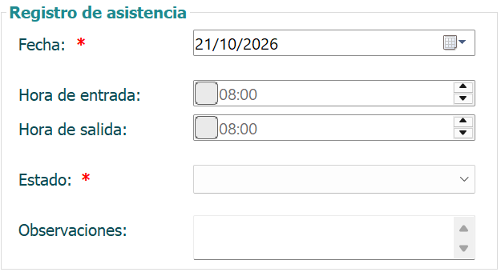
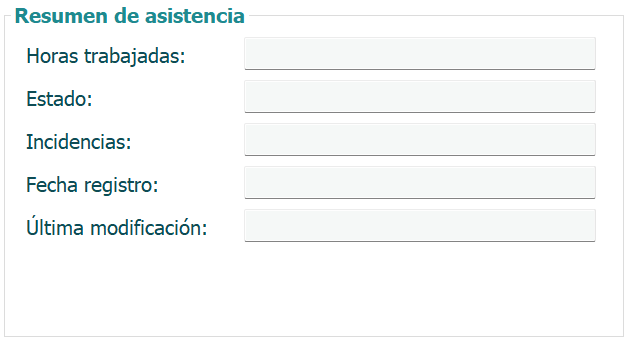
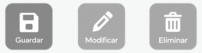

La ventana 9101 - Asistencia es parte del módulo de Recursos Humanos del sistema,
desarrollado para Embutidos de Calidad S.A. Su función es llevar el control diario de la
asistencia del personal: registrar la hora de entrada y de salida de cada empleado, el estado
del día y las observaciones que correspondan.
Con la jornada asignada al empleado, el sistema calcula las horas trabajadas y señala las
incidencias del día, como llegadas tarde o salidas antes de hora. Esta información es la base
para el cálculo de la nómina y de las horas extra.

La ventana se divide en dos partes. A la izquierda está el Detalle de asistencia, con tres secciones:
1. Información del empleado: código, nombre, departamento, puesto, jornada y tipo de puesto.
2. Registro de asistencia: fecha, hora de entrada, hora de salida, estado y observaciones.
3. Resumen de asistencia: horas trabajadas, estado e incidencias del día, además de la fecha de
registro y la última modificación.
A la derecha está la lista de Asistencias registradas con sus filtros. Al hacer clic sobre
cualquier fila, los datos de ese registro se cargan en el detalle, listos para consultarse o modificarse.

A continuación se detallan los pasos:
1. Escriba el código o el nombre del empleado. Al encontrarlo, el resto de sus datos se llenan solos.
2. Seleccione la fecha de la asistencia.
3. Marque la casilla de la hora de entrada y escríbala. Haga lo mismo con la hora de salida si ya la tiene.
4. El estado se sugiere solo según la hora de entrada; puede cambiarlo si es necesario.
5. Agregue una observación si lo requiere.
6. Presione el botón Guardar. El sistema mostrará un mensaje confirmando que la asistencia se guardó correctamente.

Cada registro tiene uno de los siguientes estados, que se muestran con un color distinto en el resumen y en la tabla:
1. Presente (verde): el empleado entró a tiempo, con una tolerancia de 5 minutos sobre el inicio de su jornada.
2. Tardanza (amarillo): el empleado entró más de 5 minutos después del inicio de su jornada.
3. Ausente (rojo): no hay hora de entrada registrada.
4. Permiso (azul): el empleado tiene un permiso aprobado para esa fecha.
Si el empleado tiene un permiso aprobado para la fecha seleccionada, el estado queda en Permiso,
no se puede cambiar y debajo del campo se muestra el tipo y el motivo del permiso.

Mientras llena el registro, el resumen se actualiza solo:
1. Horas trabajadas: diferencia entre la hora de salida y la de entrada.
2. Incidencias: indica si el empleado llegó tarde (y cuántos minutos), si salió antes de terminar su
jornada o si le falta la marca de entrada o de salida. Si no hay ninguna, se muestra un guion.

Antes de guardar o modificar, el sistema revisa los datos. Los campos con error se marcan
con un borde rojo y un mensaje debajo. No se permite guardar cuando:
1. No se ha seleccionado un empleado.
2. La fecha es futura.
3. El empleado ya tiene una asistencia registrada en esa fecha.
4. Hay hora de salida pero no de entrada, o la salida es antes o igual que la entrada.
5. No se ha seleccionado el estado, o el estado no concuerda con los datos (por ejemplo,
Permiso sin un permiso aprobado, o Presente sin hora de entrada).
Los campos marcados con asterisco (*) son obligatorios.
A continuación se detallan los pasos:
1. Seleccione en la tabla la fila de la asistencia que desea modificar.
2. Los datos se cargarán en el detalle.
3. Realice los cambios necesarios.
4. Presione el botón Modificar. El sistema mostrará un mensaje confirmando el cambio y
actualizará la fecha de última modificación.

A continuación se detallan los pasos:
1. Seleccione en la tabla la fila de la asistencia que desea eliminar.
2. Presione el botón Eliminar.
3. El sistema pedirá confirmación, indicando el empleado y la fecha del registro.
4. Al confirmar, el registro se elimina de forma permanente.
Los botones Modificar y Eliminar solo se habilitan cuando hay un registro seleccionado.
En la parte superior de la lista de asistencias puede filtrar los registros por:
1. Rango de fechas, con los campos Desde y Hasta. Por defecto se muestra el mes actual.
2. Empleado, escribiendo su nombre o código.
3. Estado: Todos, Presente, Tardanza, Ausente o Permiso.
Luego presione el botón Filtrar. También puede usar el cuadro de búsqueda rápida, que filtra
por nombre o código mientras escribe. No importan las mayúsculas o minúsculas. Debajo de la
tabla se muestra el total de registros encontrados.

El formulario tiene el botón Refrescar, que limpia el detalle para un nuevo registro y vuelve
a aplicar los filtros, y los botones de navegación para desplazarse entre los registros de la tabla:
1. Inicio va al primer registro.
2. Anterior retrocede uno.
3. Siguiente avanza uno.
4. Fin va al último registro.
Al navegar, los datos del registro seleccionado se cargan en el detalle.

Para salir de la ventana de asistencia, presione el botón Salir o dé clic en la X que se encuentra en la parte superior derecha de la ventana.